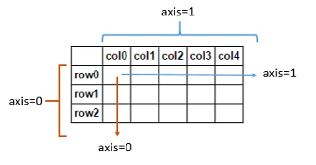

Statistics¶
import numpy as np
# 1D array
A = np.arange(20)
print(A)
[ 0 1 2 3 4 5 6 7 8 9 10 11 12 13 14 15 16 17 18 19]
A.ndim
1
# 2D array
A2 = np.array([[11, 12, 13], [21, 22, 23]])
print(A2)
[[11 12 13]
[21 22 23]]
A2.ndim
2
Sum¶
Sum of array elements over a given axis.
Syntax:
np.sum(array); array-wise sumSyntax:
np.sum(array, axis=0); row-wise sumSyntax:
np.sum(array, axis=1); column-wise sum
 Axis 0 is thus the first dimension (the “rows”), and axis 1 is the second dimension (the “columns”)
# sum of 1D array
np.sum(A1)
45
# array-wise sum of 2D array
np.sum(A2)
102
# sum of 2D array(axis=0, row-wise sum)
np.sum(A2, axis=0)
array([32, 34, 36])
# sum of 2D array(axis=1, column-wise sum)
np.sum(A2, axis=1)
array([36, 66])
Mean¶
Compute the median along the specified axis.
Returns the average of the array elements. The average is taken over the flattened array by default, otherwise over the specified axis.
float64intermediate and return values re used for integer inputs.Syntax:
np.mean(array); array-wise meanSyntax:
np.mean(array, axis=0); row-wise meanSyntax:
np.mean(array, axis=1); column-wise mean
# compute the average of array `A`
np.mean(A)
9.5
# mean of 2D array(axis=0, row-wise)
np.mean(A2, axis=0)
array([16., 17., 18.])
# mean of 2D array(axis=1, column-wise)
np.mean(A2, axis=1)
array([12., 22.])
Median¶
Compute the median along the specified axis.
Returns the median of the array elements.
Syntax:
np.median(array); array-wise medianSyntax:
np.median(array, axis=0); row-wise medianSyntax:
np.median(array, axis=1); column-wise median
# compute the meadian of `A`
np.median(A)
9.5
# median of 2D array(axis=0, row-wise)
np.median(A2, axis=0)
array([16., 17., 18.])
# median of 2D array(axis=1, column-wise)
np.median(A2, axis=1)
array([12., 22.])
Minimum¶
Return the minimum of an array or minimum along an axis.
Syntax:
np.min(array); array-wise minSyntax:
np.min(array, axis=0); row-wise minSyntax:
np.min(array, axis=1); column-wise min
# minimum value of `A`
np.min(A)
0
# minimum value of A2(axis=0, row-wise)
np.min(A2, axis=0)
array([11, 12, 13])
# minimum value of A2(axis=1, column-wise)
np.min(A2, axis=1)
array([11, 21])
Minimum¶
Return the maximum of an array or minimum along an axis.
Syntax:
np.max(array); array-wise maxSyntax:
np.max(array, axis=0); row-wise maxSyntax:
np.max(array, axis=1); column-wise max
# maxiumum value of `A`
np.max(A)
19
# maxiumum value of A2(axis=0, row-wise)
np.max(A2, axis=0)
array([21, 22, 23])
# maxiumum value of A2(axis=1, column-wise)
np.max(A2, axis=1)
array([13, 23])
Standard Deviation¶
Compute the standard deviation along the specified axis.
Returns the standard deviation, a measure of the spread of a distribution, of the array elements. The standard deviation is computed for the flattened array by default, otherwise over the specified axis.
Syntax:
np.std(array); array-wise stdSyntax:
np.std(array, axis=0); row-wise stdSyntax:
np.std(array, axis=1); column-wise std
# compute the standard deviation of `A`
np.std(A)
5.766281297335398
# standard deviation of 2D array(axis=0, row-wise)
np.std(A2, axis=0)
array([5., 5., 5.])
# standard deviation of 2D array(axis=1, column-wise)
np.std(A2, axis=1)
array([0.81649658, 0.81649658])
Variance¶
Compute the variance along the specified axis.
Returns the variance of the array elements, a measure of the spread of a distribution. The variance is computed for the flattened array by default, otherwise over the specified axis.
Syntax:
np.var(array); array-wise varSyntax:
np.var(array, axis=0); row-wise varSyntax:
np.var(array, axis=1); column-wise var
# compute the variance of `A`
np.var(A)
33.25
# variance of 2D array(axis=0, row-wise)
np.std(A2, axis=0)
array([5., 5., 5.])
# variance of 2D array(axis=1, column-wise)
np.std(A2, axis=0)
array([5., 5., 5.])
Quantile¶
Compute the q-th quantile of the data along the specified axis.
Syntax:
np.quantile(array); array-wise quantileSyntax:
np.quantile(array, axis=0); row-wise quantileSyntax:
np.quantile(array, axis=1); column-wise quantile
# 25th percentile of `A`
np.quantile(A, 0.25)
4.75
# 50th percentile of `A2`(axis=0)
np.quantile(A2, 0.5, axis=0)
array([16., 17., 18.])
# 75th percentile of `A2`(axis=1)
np.quantile(A2, 0.75, axis=1)
array([12.5, 22.5])
Correlation Coefficient¶
# documentation
np.info(np.corrcoef)
corrcoef(*args, **kwargs)
Return Pearson product-moment correlation coefficients.
Please refer to the documentation for `cov` for more detail. The
relationship between the correlation coefficient matrix, `R`, and the
covariance matrix, `C`, is
.. math:: R_{ij} = \frac{ C_{ij} } { \sqrt{ C_{ii} * C_{jj} } }
The values of `R` are between -1 and 1, inclusive.
Parameters
----------
x : array_like
A 1-D or 2-D array containing multiple variables and observations.
Each row of `x` represents a variable, and each column a single
observation of all those variables. Also see `rowvar` below.
y : array_like, optional
An additional set of variables and observations. `y` has the same
shape as `x`.
rowvar : bool, optional
If `rowvar` is True (default), then each row represents a
variable, with observations in the columns. Otherwise, the relationship
is transposed: each column represents a variable, while the rows
contain observations.
bias : _NoValue, optional
Has no effect, do not use.
.. deprecated:: 1.10.0
ddof : _NoValue, optional
Has no effect, do not use.
.. deprecated:: 1.10.0
Returns
-------
R : ndarray
The correlation coefficient matrix of the variables.
See Also
--------
cov : Covariance matrix
Notes
-----
Due to floating point rounding the resulting array may not be Hermitian,
the diagonal elements may not be 1, and the elements may not satisfy the
inequality abs(a) <= 1. The real and imaginary parts are clipped to the
interval [-1, 1] in an attempt to improve on that situation but is not
much help in the complex case.
This function accepts but discards arguments `bias` and `ddof`. This is
for backwards compatibility with previous versions of this function. These
arguments had no effect on the return values of the function and can be
safely ignored in this and previous versions of numpy.
# compute Correlation Coefficient
np.corrcoef(A2)
array([[1., 1.],
[1., 1.]])